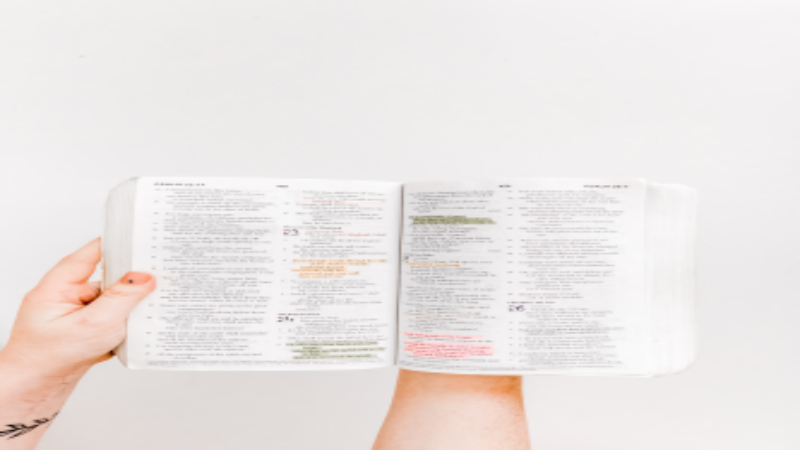

Pré-candidato ao Governo do Estado de São Paulo, o deputado estadual Arthur do Val viu todo o seu futuro político ruir ao ter um áudio vazado com declarações anti-éticas sobre as mulheres ucranianas.
Você com certeza ficou sabendo desse caso que por mais de uma semana foi veiculado nos principais meios de comunicação do país.
Sem religião, o parlamentar liberal poderia ter se livrado de uma situação como essa se tivesse aprendido algumas lições bíblicas que nos alertam sobre os perigos da língua.
Sem criar juízo de valor sobre o caso, que terá vários desdobramentos como a possível cassação do parlamentar, queremos te lembrar sobre esses ensinamentos bíblicos que podem te ajudar a evitar situações semelhantes.
Renove sua mente
A boca fala do que o coração está cheio. E nos dias atuais é fácil se contaminar com as coisas do mundo e se distanciar do propósito original que Deus planejou para sua vida.
Arthur do Val saiu do Brasil com a proposta de ajudar os ucranianos com a guerra contra a Rússia. Fez vários vídeos e diz até que ajudou os locais a montarem coquetéis molotov.
Mas o propósito original da viagem acabou com um escândalo internacional que ganhou repercussão negativa envolvendo turismo sexual.
Talvez você também esteja se desviando do seu propósito original e deixando com que as coisas do mundo te coloque do lado oposto ao que Deus traçou para sua história.
“Não se conforme com o padrão deste mundo, mas seja transformado pela renovação de sua mente . Então você será capaz de testar e aprovar qual é a vontade de Deus—sua boa, agradável e perfeita vontade”, Romanos 12:2.
Sente que está longe do seu chamado? Então aprenda a transformar sua mente agora mesmo com esses cinco passos:
Leia uma passagem da Bíblia e escreva em um caderno o que o Espírito Santo coloca em seu coração sobre isso;
Medite na palavra;
Memorize as Escrituras;
Fale a palavra de Deus em voz alta; e
Tenha acompanhamento de uma autoridade espiritual para te ajudar na caminhada.
Uma vida de leitura bíblica é importante para preencher a sua alma. Se a boca fala do que está cheio o coração, quanto mais coisas boas preencherem seus pensamentos, melhores serão as palavras que sairão da sua boca.
Deixe um comentário